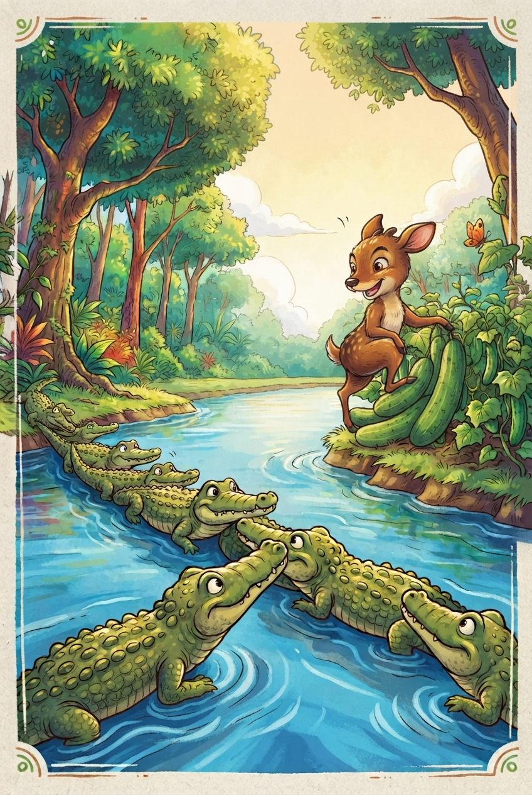
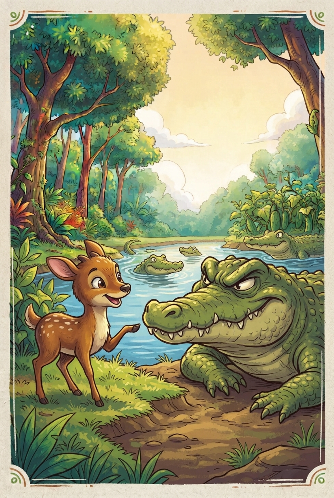

Petualangan Si Kancil
Kategori: Dongeng Fabel

Pada suatu hari yang cerah, Si Kancil berjalan-jalan di tepi hutan. Ia merasa sangat lapar karena sejak pagi belum menemukan makanan. Di tengah perjalanan, ia melihat pohon mentimun yang berbuah lebat di seberang sungai.
"Wah, mentimun itu pasti sangat segar," gumam Si Kancil. Namun, sungai itu cukup dalam dan deras. Si Kancil berpikir keras bagaimana cara menyeberang.
Tiba-tiba, ia melihat seekor Buaya yang sedang berjemur di tepi sungai. Si Kancil pun mendapat ide cerdik. "Halo, Tuan Buaya!" sapa Si Kancil. "Saya diutus Raja Hutan untuk menghitung jumlah buaya di sungai ini. Bolehkah kalian berbaris berderet sampai ke seberang?"

Buaya yang ingin tahu jumlah keluarganya, langsung memanggil teman-temannya. Mereka pun berbaris memanjang dari tepi ke tepi sungai.
Si Kancil dengan sigap melompat dari punggung buaya satu ke buaya lainnya sambil berpura-pura menghitung. "Satu, dua, tiga...!" Setibanya di seberang, Si Kancil langsung melompat ke darat dan berlari kencang sambil tertawa. "Terima kasih Tuan Buaya, aku tidak jadi lapar hari ini!"
Pesan moral: Kecerdikan harus digunakan untuk hal yang baik, bukan untuk menipu sesama.